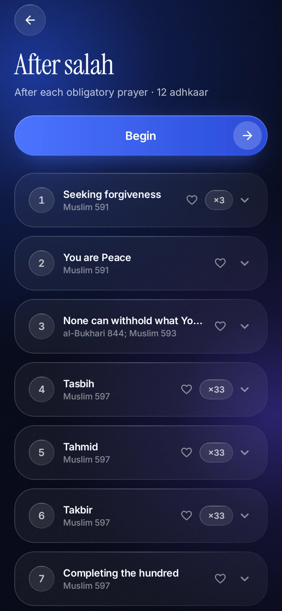

Version 0.1.7
Update · For everyone testing
After salah,
right on time.
Version 0.1.7 fixes a delay that held back the after-salah and before-sleep reminders. Install it over the one you have. Nothing is lost: your progress, streak and settings stay.
Scan to downloadOr tap the link in the message. From now on, the app tells you when an update is out.

Free for AndroidMorning and evening adhkaar, on time.